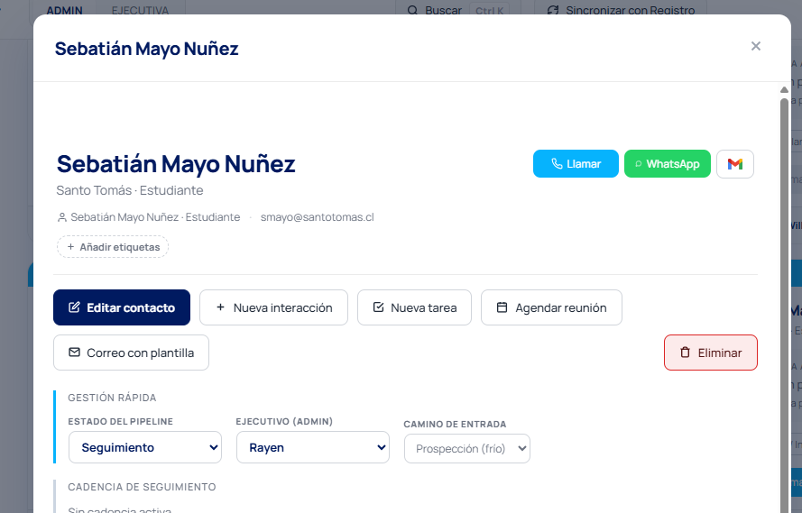
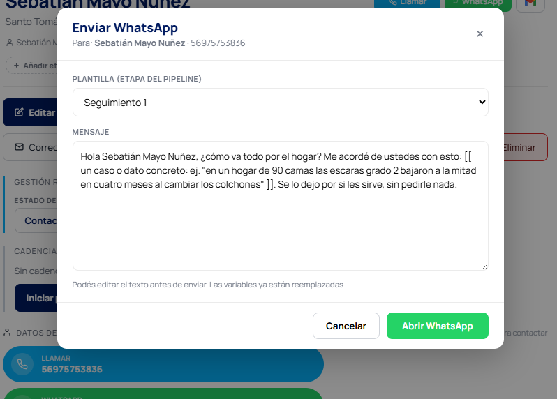
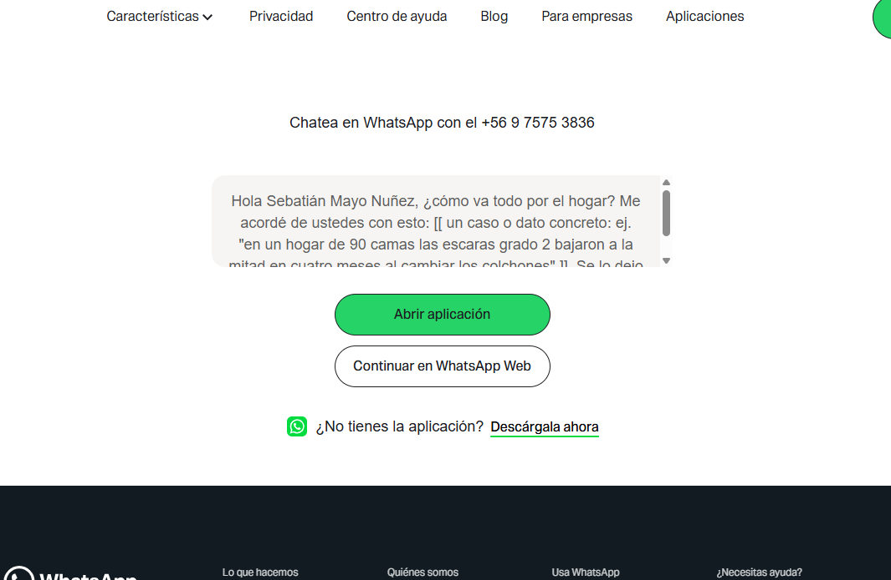

Curso 2 Discovery telefónico
La conversación que define el negocio
Después del correo viene la llamada. En OpenCluster casi nunca es una sola: es un camino de llamadas, del intermediario al decisor, hasta agendar la reunión por Meet.
Datos citados por nombre: Gong (519.000 discovery calls), Neil Rackham (35.000 llamadas, base de SPIN), Prospeo (300 millones de llamadas), Cognism, HubSpot, Chorus y Sandler. Patrones que se repiten en millones de llamadas reales.
Resumen de repaso — no reemplaza el curso
01 Qué es discovery (y qué NO)
Diagnosticar antes de prescribir
Una discovery call es una conversación de diagnóstico, no de venta. Como un buen médico: pregunta y examina antes de recetar.
- Tu trabajo no es convencerEs entender si el cliente tiene un problema que puedes resolver. Si lo tiene, la venta avanza sola.
- Calificar también es ganarPerder un deal rápido es mejor que perderlo lento: en 15 min sabes si no hay presupuesto ni problema, en vez de 3 reuniones después.
- El error #1: pitchear muy prontoHablar del producto antes de preguntar nada. El test antes de cada frase: "¿esto le sirve al cliente, o solo me sirve a MÍ decirlo?".
9%
del tiempo dedican los vendedores top a hablar de características del producto (Gong, 519.000 calls). El resto: entender al cliente.
2:43
el monólogo más largo en una discovery exitosa. Si hablas más seguido sin parar, perdiste al interlocutor.
02 El camino al decisor
No es una llamada, es un camino
El decisor está al final, protegido por intermediarios. Tu objetivo en la 1ª llamada: conseguir su contacto directo (nombre, cargo, correo/teléfono). No vendas.
Filtro
Recepción, secretaria, mesa de llamadas. No entiende el producto.
Approach: directo, breve, con autoridad. Cero explicación.
Aliado potencial
Kinesiólogo, enfermera, terapeuta, vendedor de mesón. Convive con el problema.
Approach: pequeño discovery + respeto profesional → tu campeón interno.
80%
del éxito con intermediarios lo explica el tono, no las palabras (Prospeo, 300M). Se construye con brevedad, autoridad y cero muletillas.
3-5 seg
es lo que tarda el intermediario en decidir si te pasa. Toda explicación larga te resta.
Cómo reconocerlos en 10 segundos
"Clínica X, ¿en qué le ayudo?" → filtro. Da su nombre y cargo profesional, o te hace preguntas técnicas → aliado. Tratar a un kinesiólogo como filtro pierde a quien mejor te defendería adentro.
03 Scripts que funcionan
Qué decirle al filtro y al aliado
Mismo objetivo (llegar al decisor), dos tonos distintos.
Con el filtro — directo y breve
✓ Apertura"Buenos días. Soy [tu nombre] de OpenCluster Tech. Necesito el contacto de la Coordinadora PIE del colegio. ¿Me podría pasar con ella?"
✓ Si dice "déjeme su número y le devolvemos""Lo agradezco. Para que la llamada de vuelta sea eficiente para ella, ¿me confirma cómo se llama exactamente y su correo directo? Le envío el contexto antes y así no nos cruzamos sin información."
Con el aliado — discovery + respeto
✓ Con un kinesiólogo"Hola [nombre], soy [tu nombre] de OpenCluster Tech. Sé que en estos casos quien convive con el problema clínico día a día son ustedes, más que las jefaturas. Antes de pedir hablar con la dirección, me serviría entender: ¿qué les está costando hoy en la transición a vertical?"
✓ El cierre que activa al campeón interno"Si lo que conversamos te hace sentido, lo ideal sería mostrárselo también a tu jefatura. ¿Me das su contacto directo y le adelantas que vamos a coordinar?"
04 Cuando no contestan
El buzón de voz y cuánto insistir
La mayoría de tus llamadas no las van a contestar. Eso no es fracaso: es el juego normal.
- El buzón no busca el callbackBusca dejar tu nombre instalado para que te reconozca cuando llegue tu correo o tu próxima llamada. Corto (15-30 seg), nombre claro, anuncia el correo, repite tu nombre al final.
- Máximo 1-2 buzonesDejar 3 o más baja la respuesta a ~2,2% (Gong): te vuelves ruido.
- Varía la hora, no el díaSi nunca está a las 10 AM, seguir llamando a las 10 no cambia nada. Rota: temprano, post-almuerzo, fin del día.
✓ Buzón de voz de 20 segundos"Dr. Vega, buenos días, le habla Maximiliano Astudillo de OpenCluster Tech. Lo llamaba por la nueva unidad ambulatoria de Vida Nueva. Le voy a enviar también un correo para que tenga el contexto. Repito, Maximiliano Astudillo, OpenCluster. Gracias."
11 → 33%
la probabilidad de contactar sube con cada intento: 1º ~11%, 2º ~22%, 3º ~33%. La mayoría de los éxitos ocurren entre el 4º y 6º intento — donde casi todos se rindieron.
5-6 intentos
repartidos en 2 semanas (día 0, 1-2, 4, 7-8, 12-15), variando horas y combinando con correo. Eso es profesional, no acoso.
05 Antes de levantar el teléfono
La preparación que se nota
Una buena discovery empieza antes de marcar: 10-15 minutos que separan una llamada profesional de una improvisada.
- Investiga 10-15 minWeb institucional, LinkedIn del decisor, LinkedIn de la institución, memoria anual, prensa. Objetivo: 2-3 datos concretos que demuestren que no es una llamada masiva.
- Define el objetivo de ESTA llamadaNo es "vender". Es una acción concreta: agendar un Meet, calificar/descalificar, o profundizar un problema.
- Prepara las preguntas, no improvisesTen 12-17 escritas (no para leerlas: para no perderte). Improvisar sale plano; leer literal suena a encuesta.
12-17
preguntas preparadas: 3-4 de situación, 4-5 de problema, 3-5 de implicación, 2-3 de cierre. En la llamada usas 11-14.
10-15 min
el equilibrio justo. Más es procrastinar; menos es entrar a ciegas.
06 Los primeros 90 segundos
La apertura ganadora
Los primeros 10 segundos deciden si la llamada va a algún lado. Tu objetivo no es vender: es ganarte el derecho a preguntar.
✓ Apertura completa — 4 elementos"Sra. Carmen, le habla Rayen Ogalde de OpenCluster Tech. El motivo de mi llamada es que vi que en el Hogar San Vicente atienden alrededor de 80 residentes, con un porcentaje importante en cama. Quisiera robarle 8 minutos para entender cómo manejan hoy el tema de las escaras y ver si lo que hacemos tiene sentido. ¿Tiene esos minutos ahora, o le conviene que llame en otro momento?"
1) Quién eres · 2) Por qué llamas (con un dato) · 3) Tiempo acotado · 4) Permiso con opción binaria.
✓ Si te dicen "no tengo tiempo ahora""Entiendo perfectamente. Tenemos dos caminos: o me da 45 segundos ahora para ver si esto le hace sentido, y si no, no le robo más tiempo; o agendamos 10 minutos otro día. ¿Cuál le acomoda?"
2,1x
más reuniones agendadas cuando la apertura usa "el motivo de mi llamada es…" vs un "hola, ¿cómo está?" (Prospeo, 300M).
Las 2 respuestas que SIEMPRE aparecen
"¿De qué se trata?" → contexto breve + beneficio + una pregunta (25 seg), no un monólogo. "No tengo tiempo" → validar + acotar ("¿45 seg ahora o agendamos 10 min?") + opción binaria.
07 La voz
Cómo suenas decide la llamada
En el teléfono no hay lenguaje corporal: tu voz es el 100% del mensaje. Cómo lo dices pesa más que qué dices.
- Ritmo: 140-160 palabras/minBajo 110 suenas lento; sobre 170 atropellas y transmites ansiedad. Respira antes de marcar y ancla la primera frase.
- La pausa: tu herramienta más subestimadaDespués de una buena pregunta, cállate 2-3 seg. Quien habla primero, pierde. La pausa transmite seguridad.
- La sonrisa se escuchaSonríe antes de que contesten: cambia la resonancia de tu voz y baja la defensa del receptor. Llama de pie y vocaliza.
65,6%
de las conversaciones vivas se convierten en reunión cuando conduces bien (Cognism). Lo decide cómo suenas, no el guion.
140-160
palabras por minuto: el ritmo de un buen presentador de radio, no el de alguien apurado.
08 La voz · los 4 tonos
El tono correcto en cada momento
Una llamada tiene fases, y cada una pide un tono distinto. Cambiarlo es lo que te hace sonar profesional, no leído.
AperturaSeguro y cordial. Calmado, con autoridad tranquila. No pides permiso para existir: tienes una razón legítima para llamar.
DiscoveryCurioso y empático. Más suave y lento, genuinamente interesado. Como quien quiere entender, no quien interroga. Aquí escuchas más.
PropuestaAsertivo y claro. Un punto más de energía y convicción. Afirmas con respaldo, sin condicionales tímidos ("quizás tal vez…").
ObjeciónCalmado y bajo. Lo contrafáctico: cuando el cliente sube la guardia, tú bajas el tono. Nunca a la defensiva, nunca acelerado. La calma desactiva la tensión.
El antipatrón
Mantener el mismo tono enérgico de "venta" toda la llamada suena artificial y cansa. Calmado ≠ dubitativo: bajas el tono ante la objeción, pero mantienes la autoridad.
09 El corazón: SPIN
Preguntar como un top performer
SPIN es el framework de Neil Rackham (35.000 llamadas, nunca refutado). En ventas complejas, el que mejor pregunta es el que más vende — no el que más sabe del producto.
| S Situación | El contexto actual: cuántos pacientes, qué equipamiento, cómo operan. Pocas (2-4): mucho ya lo investigaste. |
| P Problema | Destapa dificultades y pain points. Abiertas, concretas, sin implicar el producto. (3-5) |
| I Implicación | La más poderosa. Hace sentir las consecuencias del problema. Convierte "se puede vivir con él" en urgencia. (3-5) |
| N Necesidad-beneficio | El cliente articula él mismo el valor de resolverlo. Se vende solo. (2-4, hacia el final) |
4x
más preguntas de Implicación hacen los vendedores top que los promedio (Rackham). Es el único indicador que separa consistentemente a ambos grupos.
<15%
del tiempo en preguntas de Situación: si haces demasiadas, el cliente se siente interrogado.
10 SPIN en acción
De "se puede vivir con él" a urgencia
La diferencia entre Problema e Implicación es lo que crea la venta. Mira el salto:
P · Pregunta de problema"¿Cuál es el mayor desafío en la transición de TEC severo a bipedestación?" → "Tenemos casos lentos porque no contamos con bipedestador supino." (el cliente aún lo tolera)
✓ I · Preguntas de implicación"Y ese atraso en la verticalización, ¿cómo está impactando los tiempos de hospitalización?" · "¿Cómo afecta eso a sus indicadores clínicos frente a la dirección?" · "Si el patrón sigue 6 meses, ¿qué pasa con la carga del equipo y los costos?"
Las reglas de oro del discovery
| 11-14 preguntas | Menos = superficial; más = interrogatorio. |
| Talk / listen 46 / 54 | Escucha un poco más de lo que hablas. Sobre 50% hablando = pitcheas. |
| 3-4 problemas | Profundiza en pocos, no disperses. |
| Monólogo máx 2:43 | Rompe con una pregunta cada 60-90 seg. |
| <9% en features | El resto del tiempo: entender al cliente. |
11 Escuchar de verdad
SPIN te da la pregunta; esto, qué hacer con la respuesta
Preguntar bien y no escuchar es peor que no preguntar. La escucha es la otra mitad del discovery.
- Parafrasear"Entonces, si le entiendo bien, lo que me dice es que [resumen]. ¿Es así?" — confirma, da confianza y el cliente suele agregar más.
- Tirar del hilo"Cuénteme más sobre eso", "¿a qué se refiere con [su palabra]?". No avances a tu siguiente pregunta: quédate donde el cliente abrió la puerta.
- Reflejar la emoción"Suena frustrante estar consciente del problema y no tener las herramientas." Solo si es genuino.
- El silencio que hace hablarCuenta hasta 3 antes de responder. El cliente llena el vacío con lo más honesto.
41% vs 14%
cierran los que hablan 38-46% del tiempo, contra los que hablan 65%+ (Prospeo). Triple de diferencia.
✓ Tirar del hilo destapa el problema realCliente: "Con el equipamiento que tenemos vamos tirando." — Tú: "¿A qué se refiere con 'vamos tirando'?" — Cliente: "Tenemos dos bipedestadores para toda la unidad, hay pacientes que esperan días." (4 palabras destaparon el problema real)
✓ Parafrasear para confirmar"Entonces, si le entiendo bien, el problema no es solo clínico sino de carga del personal: el protocolo existe, pero la dotación no alcanza para cumplirlo. ¿Es así?"
12 Cuando hay resistencia
Las 3 categorías de objeciones
No todas las objeciones son iguales. El top 5 representa el 74% del total: no necesitas dominar veinte, sino cinco.
| Dismisivas · 49,5% | "No me interesa", "mándeme info por correo". Reflejos automáticos al ser interrumpido, no rechazos reales. |
| Situacionales · 42,6% | "No hay presupuesto", "es muy caro", "no es el momento". Problemas reales que resolver. |
| De competencia · 7,9% | "Ya trabajamos con X". Estrategia de displacement, no de convencimiento. |
El marco universal — NUNCA defiendas
Defender pone al cliente de juez y lo aleja. Siempre 3 pasos: (1) validar lo que dijo · (2) preguntar para entender · (3) redirigir con una pregunta de implicación (al costo del problema, no del producto).
13 Objeciones · ejemplos
Cómo responder a las 3 más frecuentes
Validar, preguntar, redirigir — sin defender nunca.
✓ "Los productos son muy caros""Entiendo, el precio es importante. Para entenderlo bien: ¿caro comparado con qué — otra cotización, el presupuesto, o lo que esperaban? Y antes de seguir con el precio: ¿cuánto le está costando hoy el problema que esto resolvería?" (nunca "la calidad es superior")
✓ "Ya trabajamos con otro proveedor""Me parece bien, imagino que les funciona en lo central. ¿Hay algún ámbito en el que han pensado 'me gustaría que esto fuera distinto'? Tiempos de respuesta, equipamiento específico, capacitación…" (displacement, sin atacar al competidor)
✓ "Mándeme la info por correo" (la dismisiva #1)"Por supuesto, se la mando hoy. Para no enviarle un correo genérico que se pierde, ¿me permite una pregunta rápida? ¿Hoy con qué están trabajando para la transición a vertical?" […] "Entonces le mando justo eso. ¿Le parece si lo llamo el jueves para ver qué le pareció, así no queda en el aire?"
Aceptas el correo (baja la guardia), consigues 1-2 datos para que sea relevante, y dejas un próximo paso concreto. Así un correo-al-limbo se vuelve una secuencia.
14 Del teléfono al Meet
Cerrar con un próximo paso concreto
El cierre tiene 3 movimientos. Y el error mortal es "le mando info y lo llamo la próxima semana".
1 · ResumirDevuélvele en sus palabras lo que escuchaste: "Déjeme resumir para chequear si entendí bien… ¿capturé lo central?"
2 · ConfirmarValidar que tiene sentido seguir. Si la respuesta es no, mejor saberlo ahora.
3 · Next stepReunión específica, con fecha concreta, agendada ahora: "Le propongo 30 min por Meet el martes a las 10:00 o el miércoles 15:30. ¿Cuál le acomoda?"
5 minutos
apenas cuelgas, antes de la siguiente llamada: registra en el CRM con quién hablaste, los problemas en sus palabras, el interés y el próximo paso. Lo que no registras ahí, se pierde.
El follow-up de 24 horas (ideal 2-6h)
Email de recap: agradecimiento concreto + los 2-3 puntos clave que escuchaste + confirmación del Meet (fecha, hora, link) + 1-2 recursos. No el catálogo completo.
15 En el Meet · métricas
Cómo aparecer, y cómo medirte
En el teléfono nadie te ve; en el Meet sí. Los primeros 7 segundos condicionan todo lo que escuchen después.
Reglas no negociables del Meet
- Cámara siempre encendida, encuadre cabeza y hombros, luz de frente (no ventana atrás), fondo limpio, audífonos.
- Mira a la cámara, no a la pantalla — ahí se crea el contacto visual.
- No leas: notas en viñetas cortas, no en oraciones. El cliente nota cuando lees.
- Comparte una ventana, no todo el escritorio; cierra notificaciones antes.
Las 3 métricas del discovery
| Conexión | De 10 llamadas, ¿en cuántas hablaste con persona? Normal 10-20%. Bajo → prueba otras horas. |
| Conversación → reunión | De las conversaciones vivas, ¿cuántas agendan? Bajo → revisa SPIN, escucha y cierre. |
| Intentos por contacto | Si te rindes antes del 4º intento, dejas ir prospectos alcanzables. |
16 WhatsApp
El canal que en Chile abre puertas
En Chile casi todo se coordina por WhatsApp. Vive entre la formalidad del correo y la inmediatez de la llamada — su gran momento es el seguimiento.
- Primero el permisoCierra la llamada con "¿te escribo por WhatsApp para coordinar?". Un WhatsApp esperado se abre con gusto; uno en frío se siente invasivo y te quema.
- Corto, un solo temaIdentificación + contexto · motivo concreto · una pregunta fácil de responder en 5 segundos.
- No perseguirRespeta el horario laboral, no dispares "¿lo viste?" por el visto, espacia los seguimientos aportando algo. Audios: con criterio, nunca en un primer contacto.
✓ WhatsApp de seguimiento"Hola Andrea, soy Rayen de OpenCluster, conversamos el martes sobre las grúas de transferencia. Quería confirmar la reunión que agendamos para el jueves a las 11. ¿Te acomoda esa hora o la movemos?"
Si necesitas mandar algo largo (cotización, ficha), avisa antes: "Te mando la ficha por acá, ¿te parece?". Nunca dispares un PDF sin contexto.
17 WhatsApp · desde el CRM
No copies el número: escríbelo desde el CRM
Todo está conectado. Desde la ficha del contacto mandas el WhatsApp sin salir del CRM ni copiar el teléfono a mano — y desde el computador, que es más rápido que el celular.

1. En la ficha del contacto, aprietas el botón verde WhatsApp (al lado de Llamar y del correo).

2. Se abre Enviar WhatsApp: eliges la plantilla según la etapa del pipeline y editas el mensaje. El nombre y los datos ya vienen reemplazados — solo personalizas el [[ … ]] con un dato real.
18 WhatsApp · desde el CRM
Le das "Abrir WhatsApp" y lo mandas
El último paso: el mensaje sale del CRM y se abre en tu WhatsApp con todo cargado. Revisas y envías.

3. Se abre WhatsApp con el mensaje y el número ya puestos. Eliges "Abrir aplicación" o "Continuar en WhatsApp Web", revisas y envías.
Por qué hacerlo desde el CRM
- No copias números a manoEl teléfono sale solo de la ficha: cero errores de tipeo.
- Plantillas por etapa del pipelineNo partes de cero: el CRM te sugiere el mensaje según en qué va el contacto (Seguimiento 1, etc.).
- Editas antes de enviarPersonaliza el [[ … ]] con un dato concreto del cliente, igual que enseña este curso.
- Desde el computadorMás rápido que escribir en el celular, y todo queda a un clic dentro del CRM, conectado al contacto.